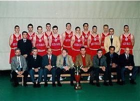
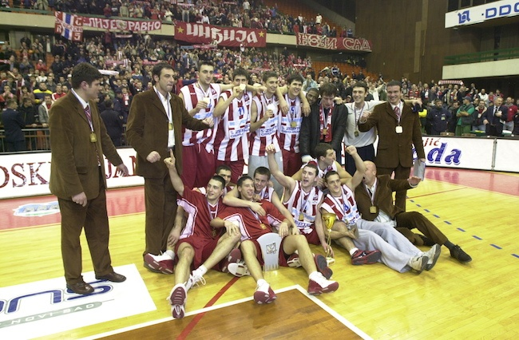
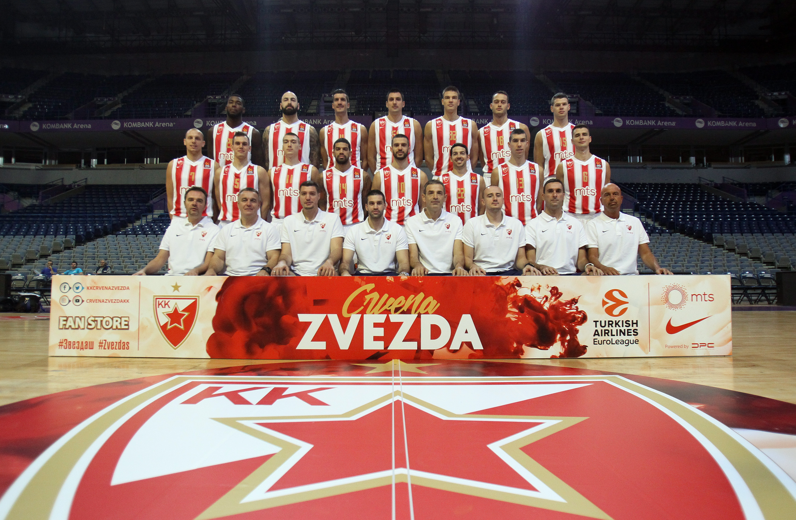

Ко смо ми?
Кошаркашки клуб Црвена звезда део је Спортског друштва Црвена звезда и основан је 04.03.1945. године и од тада је освојено је 19 титула шампиона, 9 националних Купова и Куп европских победника купова, три регионалне АБА лиге, док су бројни црвено-бели асови освајали олимпијске медаље, као и медаље на светским и европским првенствима.
Женски кошаркашки клуб Црвена звезда основан је 4. марта 1945. године као један од оснивача Спортског друштва Црвена звезда. Данас је један од најтрофејнијих клубова СД Црвена звезда и кошаркашких колектива у региону са 40 трофеја у колекцији. ККЖ Црвена звезда је донео и прву европску титулу Спортском друштву Црвена звезда.
ТРОФЕЈИ
Шампиони државе (СФРЈ - СРЈ - Србија): 1946, 1947, 1948, 1949, 1950, 1951, 1952, 1953, 1954, 1955, 1969, 1972, 1993, 1994, 1998, 2015, 2016, 2017, 2018. Национални Куп: 1971, 1973, 1975, 2004, 2006, 2013, 2014, 2015, 2017. Куп Победника Купова: 1974. AБА лига: 2015, 2016, 2017. Кошаркашки клуб Црвена звезда у своју седму деценију ушао је ведра чела, са поносом. У протеклих преко седам деценија (71 година) освојено је 19 титула шампиона, 9 националних Купова, три регионалне АБА лиге, и Куп европских победника купова, док су бројни црвено-бели асови освајали олимпијске медаље, као и медаље на светским и европским првенствима.
Звездини почеци
Од прве утакмице подно раскошно расцветалог Калемегдана, када се није знало шта значе речи "зона", "пресинг", "индивидуална одбрана", "контранапад", када су кошаркашке патике, дрес, тренерке, штитници за ноге били само мисаона именица, до данас Црвена звезда је била и остала кошаркашки бастион. Полако, ни из чега, првих година Звезда је савладавајући тешкоће (поправљено игралиште, набављени нови кошеви, сашивени дресови, набављене нове лопте…) кренула да побеђује све своје противнике, остварујући резултате са којима се нико није могао поредити. Тако је почело "златно доба” Црвене звезде, освојено је десет узастопних шампионских титула. У то време није се могла замислити ниједна национална селекција без седам-осам кошаркаша Црвене звезде, а прву петорку коју су сачињавали Небојша Поповић, Тулио Роклицер, Александар Гец, Ладислав Демшар и Срђа Калембер и дан данас многи сматрају петорком "снова”. Они су у дресовима, ишараним звездицама, симболима освојених шампионата, имали свој стил. Обезбедили су просперитет нашој кошарци, створили јој славу, забележили прве међународне успехе и препустили своје место у тиму новим генерацијама. Величина петорке снова је и у њеној пионирској, готово промотерској улози у нашој кошарци. Представљали су диван мозаик хармонично укомпонованих различитих врлина. Београд ће заувек памтити те асове јер су истовремено постизали врхунске резултате и забављали публику духовитом игром.

Након тога, наступио је резултатски пад, смена генерација и требало је да прође 14 дугих година да би се стигло до нове, једанаесте шампионске звездице. Ту, толико чекану титулу Црвена звезда је освојила у сезони 1968/69. захваљујући и томе што је најбоље партије пружала против најјачих противника. По два пута победила је Југопластику, Задар и Партизан. Предвођени Владимиром Цветковићем до титуле су дошли Драган Капичић, Зоран Лазаревић, Иван Сарјановић, Љубодраг Симоновић, Срђан Шкулић, Зоран Славнић, Тихомир Павловић, Немања Ђурић, Мирослав Тодосијевић, Драгиша Вучинић и Дубравко Капетановић и то је до тада био најмлађи шампионски тим у југословенској кошарци.

Дванаеста титула по реду освојена је у сезони 1971/72 , а онда је пласман нашег клуба у првенству опадао из сезоне у сезону. Ипак, тих седамдесетих година црвено-бели су три пута постали победници Купа, а највећи део терета носила је екипа чију су окосницу чинили Славнић, Капичић, Симоновић, Лазаревић, Вучинић, Пешић, Живковић, Грујичић, Граси, Латифић, Горан Ракочевић и Јовановић. Од прве генерације која је освојила десет узастопних титула наш клуб није имао бољу екипу од оне чије су перјанице били Славнић, Симоновић, Капичић, Вучинић и Живковић. Тек једно финале и сјај освојеног Купа победника купова, две титуле првака Југославије и два домаћа купа скроман је скор играча који су пленили игром и мајсторством. Потенцијал је био вансеријски. У својој богатој историји кошаркаши Црвене звезде одиграли су три финала Купа купова и два европска финала Купа Радивоја Кораћа.
Куп купова
Прво финале Купа купова наши кошаркаши изгубили су 1972. године од италијанског Симентала из Милана резултатом 70:74, затим су 1974. године савладали Збројевку из Чехословачке 86:75, а треће финале Купа купова изгубљено је од Спартака из Лењинграда резултатом 62:63 1975. године. У првом финалу Купа Радивоја Кораћа 1984. године у Паризу француски Елан био је бољи и победио са 73:97, док су се у другом звездином финалу за "Жућкову левицу” 1998. године играла два меча са италијанским Мешом из Вероне. Наш тим је најпре тријумфовао у гостима са 74:68, да би онда поклекао у фантастичној атмосфери дворане "Пионир” са 64:73 и са укупних 138:141 изгубио драгоцени трофеј.
Тринаеста шампионска звездица пришивена је 1993. године и то после 21 године поста. Слављена је дуго, заједно са навијачима, јер је и чекана дуго. У петој утакмици финала плејофа надигран је Партизан, а за титулу првака заслужни су сви играчи: Саша Обрадовић, Небојша Илић, Зоран Јовановић, Миле Маринковић, Никола Јовановић, Милета Лисица, Дејан Томашевић, Драгољуб Видачић, Александар Трифуновић, Растко Цветковић, Слободан Каличанин, Предраг Стојаковић и Срђан Јовановић. У наредној сезони Црвена звезда је још убедљивије дошла до 14. титуле државног првака.У финалу плеј-офа декласиран је вечити ривал, Партизан са 4:1 у победама. Своју 15. шампионску титулу наши кошаркаши су освојили 1998. године. Те године у финалу плеј-офа са 3:1 у победама Звезда је надвисила екипу Железника.

У последњих неколико година наш кошаркашки клуб се враћа на стазе успеха. Бљесак је виђен у финалу националног купа, Купа Радивоја Кораћа (домаћи куп понео је то име после укидања овог цењеног европског такмичења). Тада су црвено-бели у драматичним утакмицама финалног турнира у Новом Саду најпре надвисили првака државе Партизан, онда домаћина Војводину и коначно у финалу и екипу Рефлекса из Железника. Невероватан податак је да су наши кошаркаши сва три меча, играна у само три дана, добили у продужецима. Такав подвиг се не памти, а добија на значају јер се до трофеја дошло у значајно ослабљеном саставу, укључујући и изостанак са финалне утакмице капитена и далеко најбољег играча Игора Ракочевића. Избледела сећања на освојен куп пре 28 година освежили су Горан Јеретин, Игор Ракочевић, Вук Радивојевић, Милан Дозет, Милош Мирковић, Норман Ричардсон, Милко Бјелица, Александар Ђурић, Владислав Драгојловић, Лука Богдановић, Чедомир Витковац и Алексеј Нешовић.
Повратак на трон
Након неколио сушних година, и доласка на место председника Небојше Човића, клуб креће стазама успеха. Након неколико година консолидације клуба, црвено-бели се враћају на врх: Након 7 година паузе, први од три купа у низу освојен је 2013. године, а исти успех, који је у Крагујевцу клуб остварио под вођством тренера Владе Вукоичића, поновио је тренер Дејан Радоњић са два "везана" трофеја у Београду и Нишу. У оба финала савладана је екипа Меге. У регионалној АБА лиги, Црвена звезда је током такмичарских сезона 2014-2015 и 2015-2016 стигла до својих првих пехара у овом такмичењу. Након велике борбе у полуфиналу где је савладана екипа Партизана са 3-1, обезбеђен је нови излазак на Евролигашку сцену, а трофеј је освојен победама над екипом Цедевите. Годину дана касније, противник је био други - али исход је био исти. Екипа Црвене звезде освојила је поново шампионско прстење, овога пута у финалу у Сремској Митровици против екипе Мега Лекса...
Трофејне године у домаћим и регионалним оквирима, обележиле су и сјајне представе у Евролиги. Након пласмана у ТОП 16 фазу, црвено-бели су били једно од најпријатнијих изненађења тог такмичења у такмичарској 2015-2016 сезони, где су након победа над Реалом, Химкијем, Бајерном, Анадолу Ефесом...стигли до четвртфинала, где су поражени од каснијег шампиона тог такмичења екипе ЦСКА...
Први тим је до краја сезоне потврдио свој квалитет и освојио домаћу титулу ,победом над Партизаном НИС 3-1 у финалној серији, а посебно ће се памтити тројка марка Гудурића о таблу са 9 метара у финишу утакмице број 2.
Црвена звезда мтс је тако завршила још једну сезону у којој сачувала примат у домаћим оквирима, такође и направила још један корак више у Европи пласманом у плеј оф, где је тим поражен од каснијег првака Европе, екипе ЦСКА са 3-0.

У такмичарску 2016-2017 тим је ушао са неколико измена. Вратио се Џенкинс, стигао је Кузмић, током сезоне пристигли су Волтерс и Томпсон, своју шансу добио је Добрић... И поново се завшило историјском сезоном. Екипа је сјајно играла Евролигу, памтиће се серија од 7 узастопних победа у низу, током зиме. Екипа је по први пут у новом формату са 30 кола, показала пуно, носила се са знато скупљим и квалитетнијим тимовима, оставила иза себе на табели великане попут Барселоне, Макабија... али је остала без плеј офа и завршила на 9. месту.
Ипак, тим је освојио АБА лигу, и то доминатним играма у финалу против Цедевите, а након тријумфа од 3-0, црвено-бели су још једном обезбедили пласман у Евролигу. Доминација у домаћим оквирима потврђена је освајањам националног купа против Партизана у Нишу, а нова „трипла круна" потврђена је освајањем домаћег првенства и то против ФМП-а резултатом 3-0. Уз трофеје, још једна потврда доброг рада клуба била је промоција неколицине играча, а у финалу Суперлиге искочио је Добрић, који је проглашен и за најкориснијег играча финалне серије.
Завеса на још једну успешну сезону је пала... Црвена звезда мтс наставља и даље са истим циљевима и амбицијама... Да осваја трофеје у домаћим и регионалним оквирима, и на што бољи начин представља Србију у Евролиги...